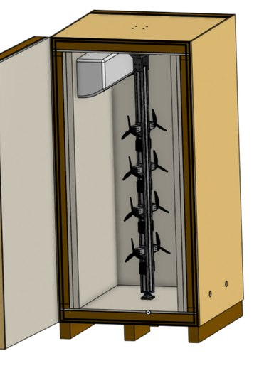
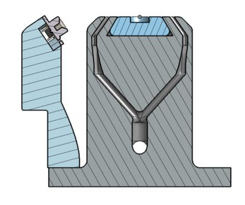
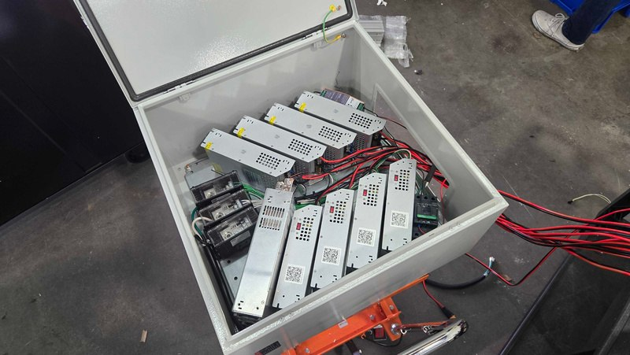
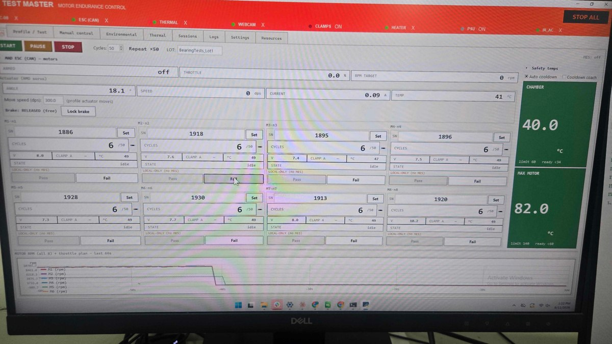
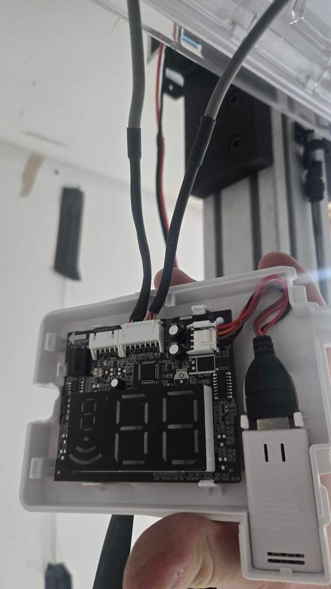
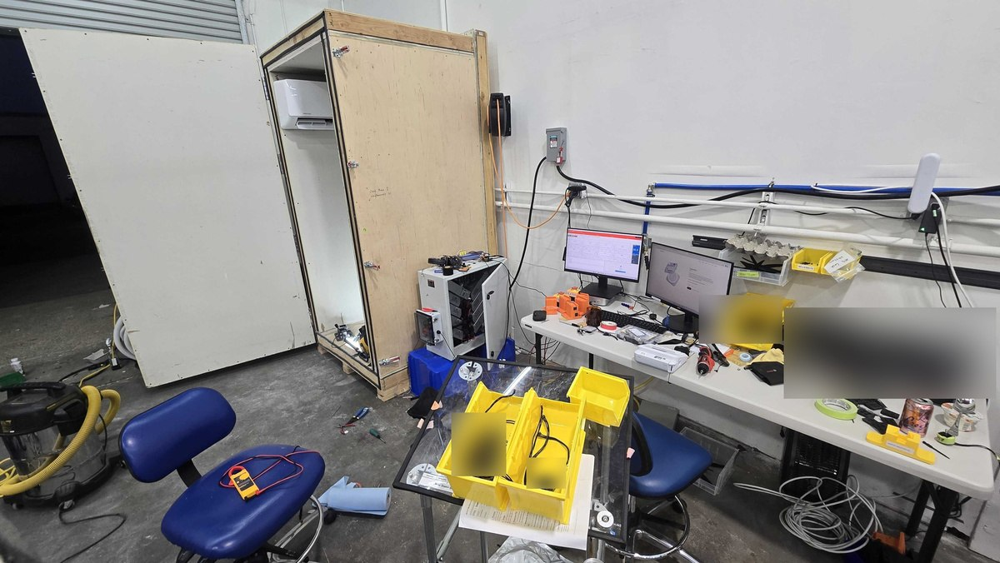
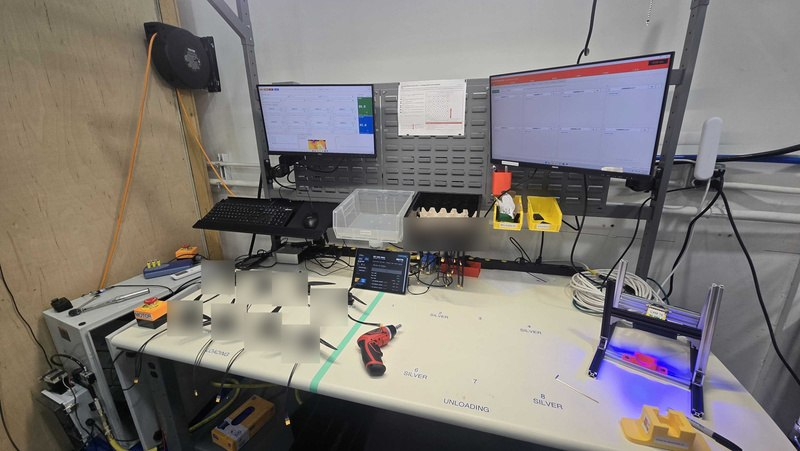

Motor Life Test Chamber
An endurance test only helps if the rig can keep running. This chamber tests eight motors at once, using throttle-blip profiles and measurements of current and voltage at the ESC. An actuator rotates the motors to reproduce gyroscopic loading in flight. My work focused on cooling, power distribution, temperature control, and the operator workflow.
I built cooling manifolds into the 3D printed motor mounts, with a single air fitting feeding each mount. Bringing the airflow directly to the motor cut cooling time in half.
I also designed the power supply box layout and built its wiring: nine supplies totaling roughly 15 kW, nine power harnesses, and CAN connections to the actuators and motors. The layout keeps the supplies compact while leaving every terminal accessible for service. At the time of this portfolio, the box had completed more than 13,000 official three-minute throttle-blip cycles without shorts, wiring failures, or downtime.
To automate temperature cycling, I captured the air conditioner's infrared commands and retransmitted them with an Arduino and IR transmitter. I tuned a closed-loop PID controller and added hysteresis to avoid short-cycling the compressor.
The workbench needed attention too. I mapped the workflow, wrote an SOP, and reorganized the space with dovetail assembly jigs and assigned locations for motors awaiting shipping. Across these improvements, overall cycle time fell from 10 minutes to four.







